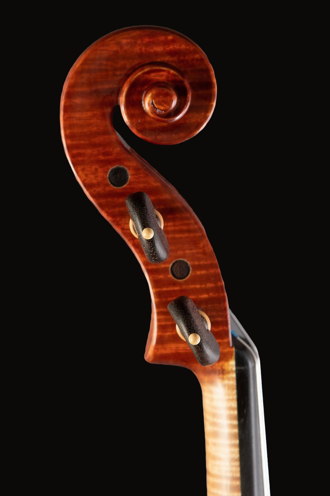

Instruments / Inspired by Stradivari



Inspired by Stradivari
ModelStradivari
Size—
WoodSpruce / Maple
Ships worldwide
i
Packing and cost are agreed by email before sending.
Interested in this instrument? Contact me →